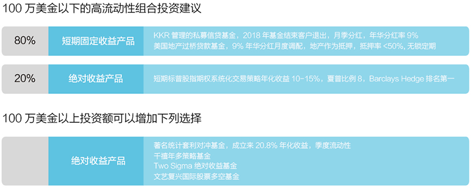

联合家族办公室服务
站在客户立场，着眼百年传承，为家族基业长青而殚精竭虑

海外金融服务
资立方依托经验丰富的一线资产团队，将帮助家族办公室进行全球优质资产的筛选与配置。
资立方资产团队认为，投资收益主要有四大来源：一是投资能力，即选股，进行行业、资产和国别配置，同时关注私募市场等；二是结构性机会，比如中概股私有化套利，一二级市场套利等；三是非传统资产配置，如地产、商品等；四是传统资产配置，如股票、债券等。
根据这一理念，我们通过帮助客户在全球范围内进行资产配置，以最大化投资收益，满足家族财富保值增值的需求。
我们重点推荐的产品包括股权类产品、房地产类产品和基金固收类产品等几大资产类别。
具体产品介绍如下：
股权类产品
资立方股权类产品以境外股权投资产品为主，境内股权投资产品为辅。其中，境外股权投资产品以美国股权投资产品（独角兽公司）为主。涉及的领域包括：互联网交通、移动购物、大数据、计算机视觉技术、3D 技术、航天科技和超级高铁等。
房地产类产品
资立方房地产类产品主要包括：酒店项目、住宅项目、商业地产项目和综合体项目等。产品按投资方式可分为房地产项目出售、投资股权份额、工程衔接贷款等。项目主要集中于纽约、波士顿、芝加哥等核心区域。
基金固收类产品
资立方根据国内客户需求，由经验丰富的一线海外资产团队，精选了数只海外优秀基金。产品类别主要有类固收基金、对冲基金及PE/VC 基金等。
结合目前的全球市场趋势和国内家族办公室的需求，我们给客户的资产配置建议如下:
海外保险
资立方联合美国、香港等地的保险公司和保险经纪公司，为家族办公室客户提供海外保险服务。海外保险相对国内保险有保费低、保证范围广和保额高等特点，美国的指数型万能险还具备避税和从现金值借款等功能。
资立方联合家族办公室保险服务覆盖了各大主流保险公司的产品，产品类型包括香港重疾险、美国人寿保险和美国万能险等，以满足客户的各类保险需求。
海外资产尽职调查服务
资立方为客户提供专业的海外资产尽职调查服务，为投资人提供最为坚实的投资参考与建议。包括但不限于：
1、管理人尽职调查：管理者职业资质、经验、背景，公司历史沿革与发展变化，组织稳定度及未来战略规划等。
2、项目标的尽职调查：标的业绩表现、报表、期后事项、运营的可持续性与价值链、政策、合规体系等。
3、宏观市场环境尽职调查：特定国外市场环境的法律、政治、经济、文化、税收、金融政策等。
资金跨境咨询服务
资立方资金跨境咨询团队拥有多位来自银行、保险及私募基金国际业务部门的专家成员，基于丰富的业务实践经验和良好的监管机构沟通管道，根据实际政策环境和业务资源，为家族办公室及其出资人提供资金合规跨境配置的多元化操作方案。
投研支持服务
资立方投研团队将围绕海外大类资产市场主题，追踪海外重大事件、货币政策、市场动态，提出专业观点和投资建议，并定时发送相关报告。
海外非金融服务
移民服务
资立方与国内外各大移民公司、专业律师事务所等机构合作，由专业的移民顾问团队提供移民整体规划与咨询服务及各地移民咨询服务。
资立方的移民项目以美国EB-5 投资移民项目为主。同时，资立方也提供欧洲、加拿大、澳洲等地的移民咨询和规划服务。
目前在推项目示例如下：
1.美国投资移民EB-5项目
2.塞浦路斯投资移民项目
海外置业服务
为满足客户对全球热门区域置产的需求，资立方和中外各知名房产公司进行战略合作，推出了海外置业服务。项目种类包括了公寓、别墅、酒店、度假地、庄园、护理院、地块及停车位等供不同需求的客户进行选择。项目价位介于数十万人民币到上亿人民币之间，预期回报率约为5%-20%。
此外，我们将发挥丰富而高效的海外资产跨境资金架构设计经验，协助客户完善海外置业的资金程序。
海外考察服务
资立方根据国内高净值人群的需求，推出了涵盖前沿科技、高端金融、物流实业、文化交流和政界参访等领域的海外考察服务板块。具体服务内容如下：
前沿科技:聚焦硅谷最新、最前沿的项目路演，直击投资机会, 全面探寻硅谷创新创业。
高端金融:对话纽约金融业翘楚，探寻中国未来经济发展之路。
物流实业:深入了解美国高效的物流运作流程和物流新技术的开发与利用。
文化交流：汇聚国际稀缺文化艺术资源，与艺术家近距离交流，参与共同文化交流旅行，艺术沙龙分享等。
政界参访：聆听当代金融，探讨世界经济；参加美国总统就职典礼，与政界领袖座谈交流。
跨境投资：亲临每年一度全球投资者奥马哈朝圣之旅的巴菲特股东大会，了解美国财富动向。
海外教育及培训服务
资立方立足国际视野，甄选国内外顶级教育资源，联合道口教育、清华、北大、哥伦比亚大学、UCLA 等世界顶级学府，为联合家族办公室服务的家族成员提供精锐投资者教育课程。
此外，资立方特邀香港中文大学教授，为高净值客户将要出国留学的子女提供专业的出国辅导和培训。
海外实习服务
资立方与专业的跨国商业实践服务机构合作，面向家族中年满18 周岁的学生或有工作经验人士，提供来自六个国家 - 英国、美国、德国、澳大利亚、西班牙和哥伦比亚的超过二十多个行业的实习和商业实践机会。
资立方的海外实习服务将提供一系列全面的顶尖级专业化发展资源，专注于实践者的个人及职业成长。该项目将着重于以下方面：
职业技能培训：专注于多领域培养，包括加强专业和沟通技能
跨文化技能培训：通过培训，为在陌生环境中的文化冲击做好准备
提供HR 领域广泛使用的自我测评工具
一系列配套化培训教程的指导和支持
海外医疗及生活服务
资立方依托专业的海外医疗及生活咨询团队和海外服务网络，为家族办公室提供家族成员的海外医疗及生活支持服务。服务范围包括医疗咨询和医疗机构推荐服务、酒店和交通咨询服务等。包括但不限于以下服务：
- 资立方与香港专业机构合作，隆重推出了精品高端体检服务。该服务将提供全方位的便捷体检流程和全数字化的体检信息系统，可根据客户需求量身定制体检套餐，并能最大程度的保证客户体检的私密性。
- 资立方与亚洲著名包机服务商合作，为客户提供全订制化的私人飞行解决方案。服务内容包括单次包机服务，公务试飞及体验，公务机运营及托管服务比较和应急包机飞行服务等。
家族传承与治理服务
资立方为客户提供家族传承和治理的高端服务。
具体包括但不限于：
- 家族信托
- 保险工具
- 法律及税务筹划
- 家族慈善事业

以上各个环节都由资立方的资深顾问和专业人士为客户提供咨询及服务。我们整合了华尔街及全美最优质的资源，同时团队皆由多年留美的细分行业的成功华裔参与，熟知中国文化，深知客户需求，以保障客户能获得最优质的体验。